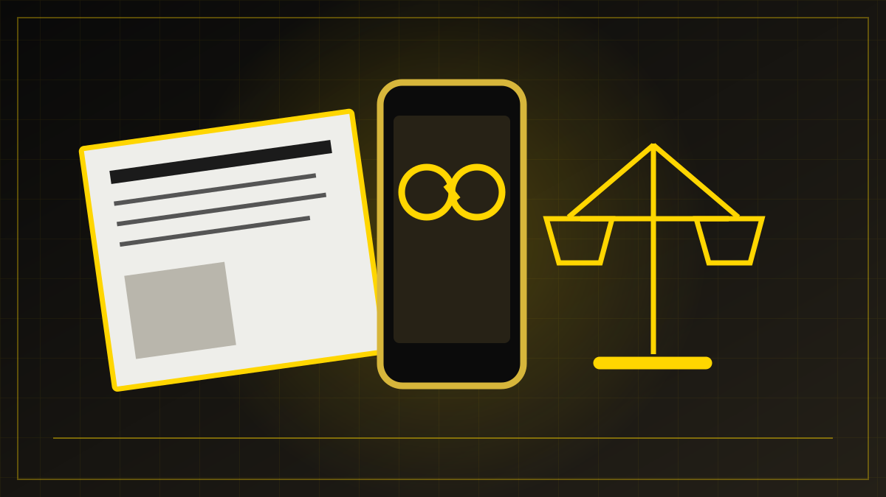

REDAKSJONELT UTKAST – IKKE PUBLISERT
Medier og teknologi · Nyheter · 28. oktober 2026
Norske mediehus fikk medhold: Retten stanser Metas nye vilkår
Oslo tingrett har stanset Metas varslede nye vilkår midlertidig etter krav fra ti norske medievirksomheter. Om vilkårene er lovlige, er ennå ikke endelig avgjort.

En konflikt om tilgang og rettigheter
NRK, TV 2, Schibsted og flere andre norske medievirksomheter har bedt Oslo tingrett om å stanse nye vilkår fra Meta. Ifølge Mediebedriftenes Landsforening (MBL) kan endringene gi selskapet omfattende adgang til å hente artikler, bilder og videoer fra redaktørstyrte medier, også innhold som normalt ligger bak betalingsmur.
Ti medievirksomheter står bak begjæringen: NRK, TV 2, Schibsted, Amedia, Polaris Media, Aller Media, Dagens Næringsliv, Mentor Medier, NTB og Hordaland Folkeblad. De ba om en midlertidig forføyning for å hindre at endringene trådte i kraft før lovligheten ble vurdert.
Nye vilkår fra november
Meta varslet nye betingelser for bedriftskontoer på blant annet Facebook og Instagram. Innføringen var først planlagt 30. oktober, men ble senere utsatt til 20. november 2026. Mediene frykter at endringene kan gi Meta rettigheter til journalistisk stoff som utgiverne mener de selv må kunne kontrollere. Bruk i kunstig intelligens er en del av bekymringen.
Mediebransjen er allerede avhengig av digitale plattformer for å nå lesere. Dermed får spørsmålet en praktisk side: Hvis en avis mener vilkårene er urimelige, hvor enkelt er det da å velge bort plattformen uten å miste kontakt med publikum?
Retten ga mediene medhold 28. oktober
Onsdag 28. oktober besluttet Oslo tingrett en midlertidig forføyning som forbyr Meta Platforms Ireland Limited å sette de varslede endringene i de kommersielle vilkårene ut i livet inntil spørsmålet om lovlighet er rettskraftig avgjort. I omtalen av kjennelsen fremgår det at retten mener mediehusene risikerer å miste kontroll over redaksjonelt innhold, også materiale bak betalingsmur.
En midlertidig forføyning er ikke en endelig dom om vilkårenes lovlighet. Retten har gitt mediene et foreløpig rettslig vern mens hovedspørsmålet avklares. Det ville være misvisende å skrive at hele saken er avgjort.
Mediebedriftenes Landsforening (MBL) og de involverte mediene omtaler kjennelsen som en viktig seier. MBL mener retten har lagt til grunn at Meta har en dominerende stilling i det aktuelle markedet, og at de foreslåtte vilkårene er urimelige. Dette er medienes framstilling av en foreløpig rettsavgjørelse, ikke en endelig dom om alle rettsspørsmålene.
Meta opplyste 28. oktober, gjennom kommunikasjonsdirektør Andy Stone, at selskapet ikke vil innføre oppdaterte vilkår før det har gjennomført en grundig konsultasjon med bransjeorganisasjoner og medieledere. Ifølge uttalelsen kan samtalene gjøre at innføringen utsettes til etter 20. november. Meta sier at de gjeldende vilkårene skal gjelde inntil videre. Uttalelsen ble gitt i forbindelse med den internasjonale kritikken av vilkårsplanen.
Kjennelsen ble avsagt på skriftlig grunnlag uten at Meta først fikk uttale seg i rettsmøte, ifølge omtalen av rettens beslutning. Meta kan kreve etterfølgende muntlig forhandling. Dette er en viktig del av den videre rettslige prosessen og et forbehold ved vurderingen av avgjørelsen.
Et viktig skille i saken går mellom stoff avisa frivillig deler på en plattform, og innhold som hentes fra dens egne nettsteder. Et annet går mellom distribusjon av en lenke og mulig bruk av tekst og bilder til andre formål. Hvilke rettigheter vilkårene faktisk gir, er et spørsmål retten kan måtte ta stilling til.
Hva er avklart – og hva gjenstår?
Per kildesjekk 1. november 2026 er det dokumentert at Oslo tingrett har stanset vilkårsendringen midlertidig, og at Meta har varslet konsultasjoner. Om de omstridte vilkårene lovlig kan innføres, er ikke endelig avgjort i de gjennomgåtte kildene. Eventuelle nye rettsmøter, anker, endrede vilkår og senere uttalelser må kontrolleres før publisering.
En større prinsippsak for pressen
Store mediehus har økonomiske og juridiske ressurser til å gå til retten. Mindre redaksjoner og lokale medier møter likevel noen av de samme utfordringene: De produserer innhold, mens teknologiselskaper styrer en stadig større del av veien fram til leseren.
Derfor handler konflikten ikke bare om ett avtalevilkår, men også om forutsigbare rammer for journalistikk på internett. Foreløpig har retten sagt stopp til innføringen. Den videre rettslige behandlingen vil avgjøre om og på hvilke vilkår endringene kan brukes.